Слева оригинальный reference, справа actual render production index-Bb8RXsDf.js. Никакой ретуши; CPU-компоновка nearest-neighbour. Пары масштабированы для размещения, оригинальные DPR 1 PNG сохранены отдельно. Это baseline, не исправления и не аппаратная приёмка.
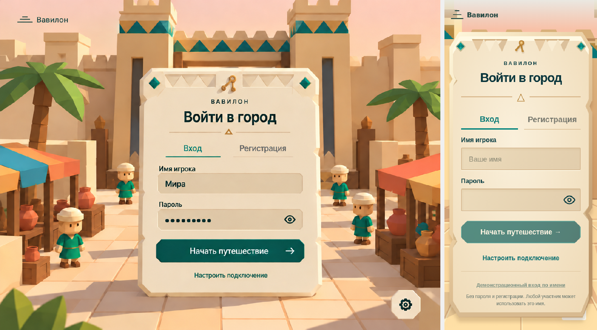
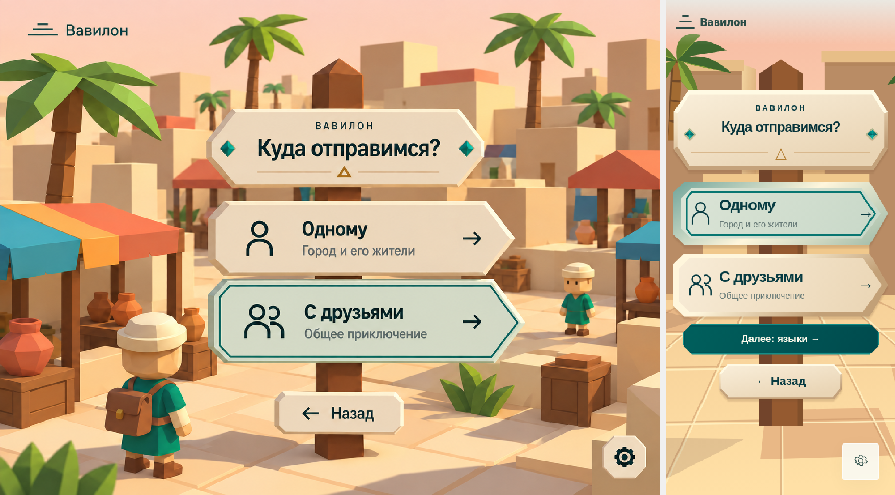
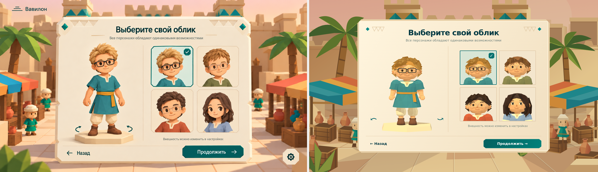
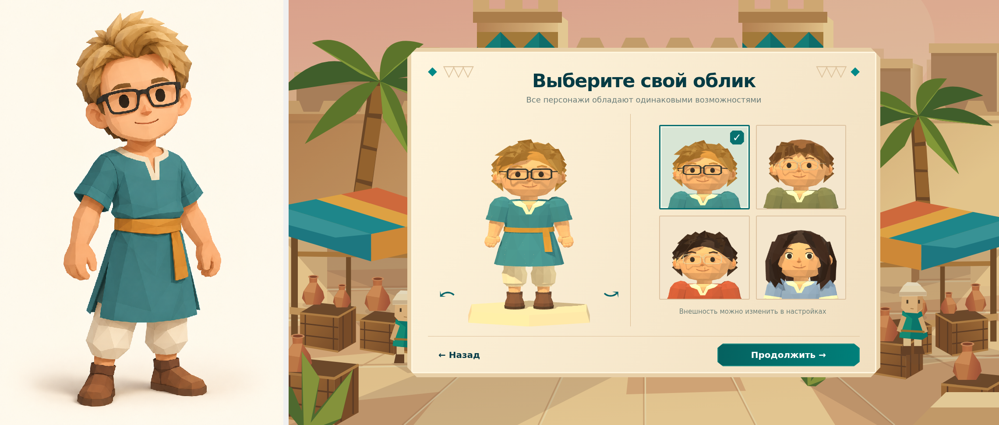
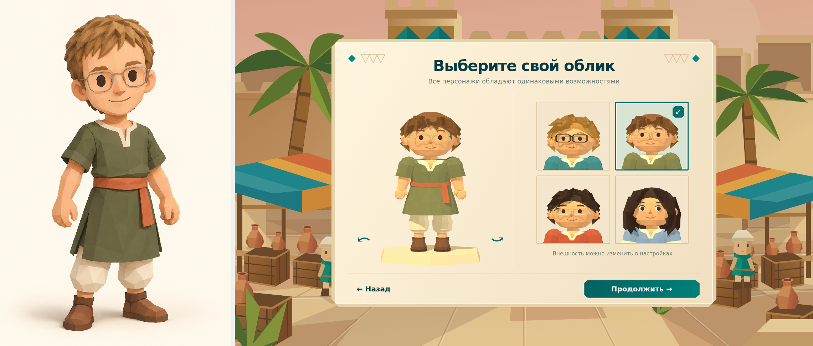
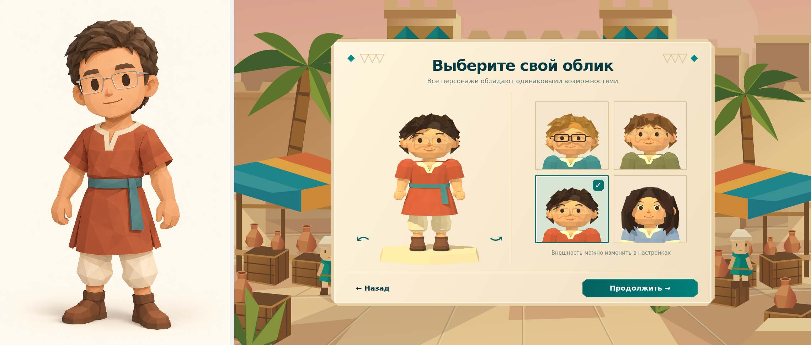
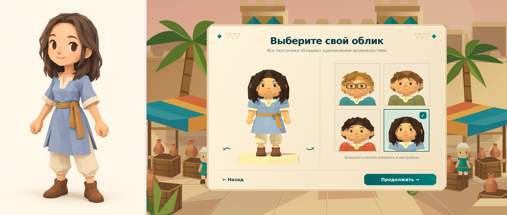
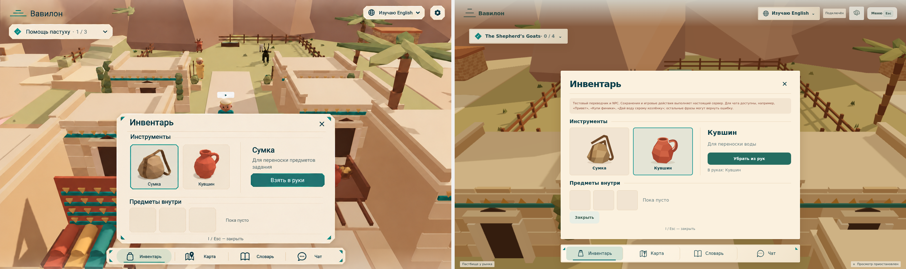
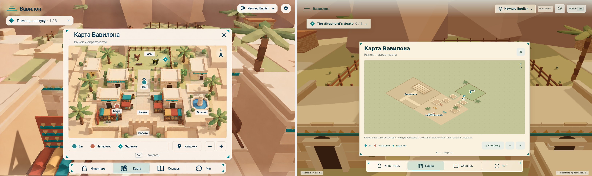
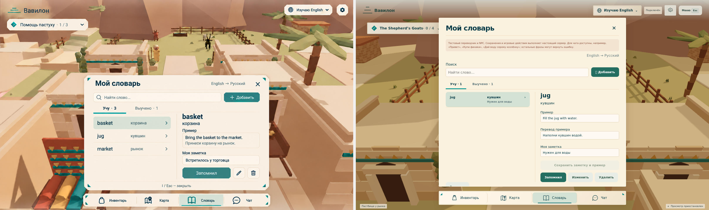
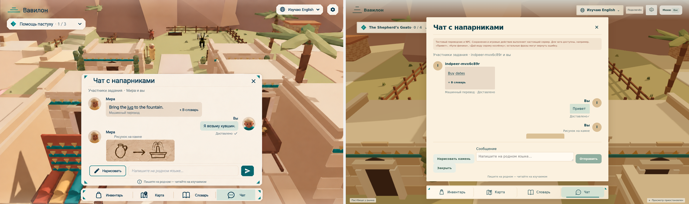